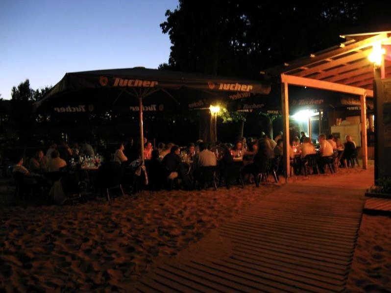

Verein & Anlage
Tennisverein in der Beach-Arena, gegründet 1995
Seit 1995 spielt der T.C. Philathlos auf fünf Sandplätzen bei der Beach-Arena im Münchner Norden, direkt an der U6 Studentenstadt. Tennis macht Spaß, Jung und Alt und der ganzen Familie, und ganz besonders im Verein.
Hauptziel des Vereins ist die Förderung von Kindern und Jugendlichen. Die Erwachsenen unterstützen dieses Ziel mit Freude. Gemeinsam mit unseren Mitgliedern wollen wir durch neue Ideen und Veranstaltungen neue Mitglieder gewinnen und die vorhandenen langfristig an den Club binden.
Neben Tennis bieten wir Beachvolleyball, Beachtennis, Beachbadminton, Beachsoccer, Speedminton und Tischtennis an. Schnuppern Sie rein, ohne Aufnahmegebühr.

Auf einen Blick
Anlage
Föhringer Ring 5
80805 München
5 Sandplätze
Winterspielbetrieb
in der Halle
U6 Studentenstadt
Parkplätze
an der Anlage
Keine Aufnahmegebühr
Schnuppern jederzeit
nach Absprache
Clubleben
bei uns ist immer was los, vor allem zwanglos
Unser Café, Bistro und Beach-Biergarten mit Sonnenterrasse macht das Clubleben noch schöner. Rund um die Plätze gibt es Tenniszubehör und einen Bespannservice.


Turniere und Feste
- Clubmeisterschaft
- Schleifchen- und Tie-Break-Turnier
- Doppel-Abend und Kennenlern-Nachmittag
- Familien-Tennisolympiade
- Grillfest, Sommerfest, Saisonabschluss
- Tenniscamp in Griechenland
Beachsport für Mitglieder
- Beachtennis und Beachvolleyball
- Beachbadminton und Beachsoccer
- Speedminton und Tischtennis
Kinder und Schulen
Kooperation mit Kindergärten und Schulen, Fördermaßnahmen für talentierte Kinder.
Partner
Aktuelle Partner mit Logos vom Verein Auf der bisherigen Website genannt: